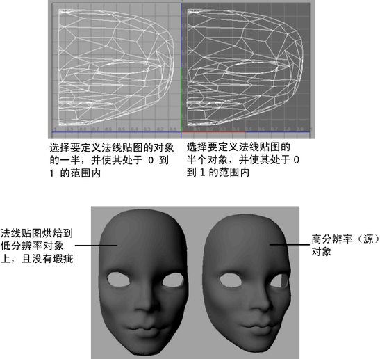

跨角色镜像法线贴图可以优化纹理使用，所有法线贴图的细节都是围绕 UV 轴相对称。例如，角色的两个手臂可以共享相同的法线贴图。
如果几何体的两半均与另一半叠加而被渲染为法线贴图，则法线的镜像会在组合结果中引入瑕疵。因此，需要指定由几何体的哪一半来定义法线贴图（另一半只需使用即可）。
请按照以下步骤创建法线贴图。
在角色或对象上创建并显示镜像法线贴图：选项 1
- 设定对象的“UV 缠绕顺序”(UV Winding Order)以“检测”(Detect)并确保镜像法线贴图的两侧均能正确显示。有关 UV 缠绕顺序的详细信息，请参见 UV 缠绕顺序。
- 选择希望为其定义法线贴图的那一半对象（例如面）。使这一半处于 0 到 1 的 UV 范围内。
- 将对象的另一半移出 0 到 1 的 UV 范围，以免影响生成的法线贴图。
- 使用“照明/着色 > 传递贴图”(Lighting/Shading > Transfer Maps)烘焙法线贴图。

在角色或对象上创建并显示镜像法线贴图：选项 2
- 设定对象的“UV 缠绕顺序”(UV Winding Order)以“检测”(Detect)并确保镜像法线贴图的两侧均能正确显示。有关“UV 缠绕顺序”(UV Winding Order)的详细信息，，请参见 UV 缠绕顺序。
- 选择“照明/着色 > 传递贴图”(Lighting/Shading > Transfer Maps)，并启用“Maya 公用输出”(Maya Common Output)部分下的“忽略镜像面”(Ignore Mirrored Faces)选项。有关详细信，请参见忽略镜像面。
提示：
- 为获得最佳结果，请确保模型的每一侧的 UV 缠绕一致。否则，可能会出现瑕疵。
- 若要避免在角色上镜像法线贴图时出现接缝，请确保源几何体是对称的。也就是说角色的两侧相匹配。使用衍生自扫描数据的曲面网格时，这一点尤为重要。